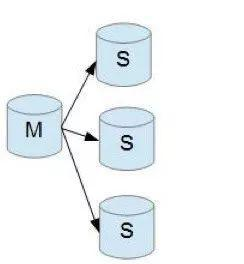
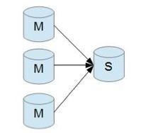
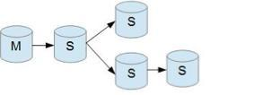
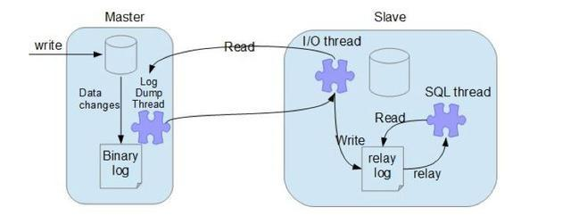
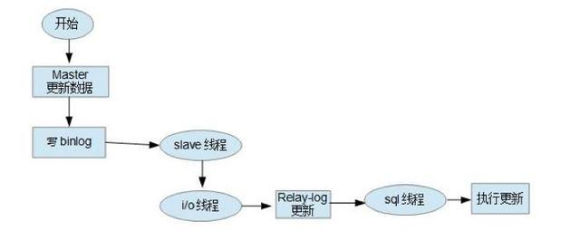
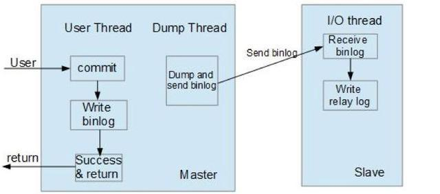
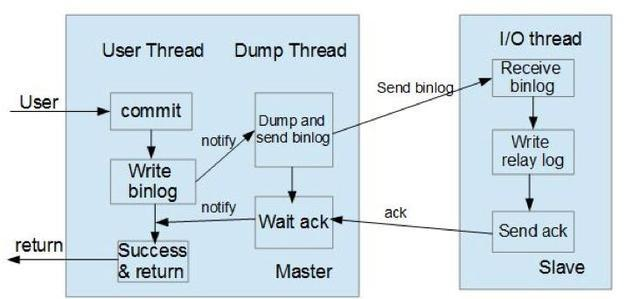

主从部署
主从（多主）
主从（一主多从）
mkdir -p /home/mysql/master-slave/{master-2200,slave-22001,slave-22002}
mkdir -p /home/mysql/master-slave/master-2200/{data,mysql,logger}
mkdir -p /home/mysql/master-slave/slave-22001/{data,mysql,logger}
mkdir -p /home/mysql/master-slave/slave-22002/{data,mysql,logger}
- /home/mysql/master-slave/master-2200/mysql/my.conf ``` vim /home/mysql/master-slave/master-2200/mysql/my.conf
[mysqld]
port=3306
lower_case_table_names=1
character-set-server=utf8
collation-server=utf8_general_ci
init_connect='SET NAMES utf'
default_authentication_plugin=mysql_native_password
max_connections=320
要同步的库（如果不写，默认全部同步）
binlog-do-db=master2200
不同步的库(多个写多行)
binlog-ignore-db=mysql binlog-ignore-db=information_schema binlog-ignore-db=performance_schema binlog-ignore-db=sys
自动清理N天前的log文件
expire_logs_days=7
启用二进制日志
log-bin=master-bin
服务器唯一ID,必须属性
server-id=2200
开启主库binlog索引，推荐属性
log-bin-index=mysql-bin.index
default-storage-engine=INNODB
character-set-server=utf8
collation-server=utf8_general_ci
sync_binlog=1
[client] default-character-set=utf8 [mysql] default-character-set=utf8
在主服务器上最重要的二进制日志设置是sync_binlog，这使得mysql在每次提交事务的时候把二进制日志的内容同步到磁盘上，即使服务器崩溃也会把事件写入日志中。
sync_binlog这个参数是对于MySQL系统来说是至关重要的，他不仅影响到Binlog对MySQL所带来的性能损耗，而且还影响到MySQL中数据的完整性。对于"sync_binlog"参数的各种设置的说明如下：
sync_binlog=0，当事务提交之后，MySQL不做fsync之类的磁盘同步指令刷新binlog_cache中的信息到磁盘，而让Filesystem自行决定什么时候来做同步，或者cache满了之后才同步到磁盘。
sync_binlog=n，当每进行n次事务提交之后，MySQL将进行一次fsync之类的磁盘同步指令来将binlog_cache中的数据强制写入磁盘。
在MySQL中系统默认的设置是sync_binlog=0，也就是不做任何强制性的磁盘刷新指令，这时候的性能是最好的，但是风险也是最大的。因为一旦系统Crash，在binlog_cache中的所有binlog信息都会被丢失。而当设置为“1”的时候，是最安全但是性能损耗最大的设置。因为当设置为1的时候，即使系统Crash，也最多丢失binlog_cache中未完成的一个事务，对实际数据没有任何实质性影响。
对于高并发事务的系统来说，“sync_binlog”设置为0和设置为1的系统写入性能差距可能高达5倍甚至更多
- /home/mysql/master-slave/slave-22001/mysql/my.conf
vim /home/mysql/master-slave/slave-22001/mysql/my.conf
[mysqld]
port=3306
lower_case_table_names=1
character-set-server=utf8
collation-server=utf8_general_ci
init_connect='SET NAMES utf'
default_authentication_plugin=mysql_native_password
max_connections=320
server-id = 22001
加上以下参数可以避免更新不及时，SLAVE 重启后导致的主从复制出错
read_only = 1 master_info_repository=TABLE relay_log_info_repository=TABLE relay-log = slave-relay-bin
主服务器I/O日志读取、记录及存放
relay-log-index=slave-relay-bin.index replicate-do-db=master2200 replicate-ignore-db=mysql replicate-ignore-db=sys replicate-ignore-db=information_schema replicate-ignore-db=performance_schema
[client] default-character-set=utf8 [mysql] default-character-set=utf8
- /home/mysql/master-slave/slave-22002/mysql/my.conf
vim /home/mysql/master-slave/slave-22002/mysql/my.conf
[mysqld]
port=3306
lower_case_table_names=1
character-set-server=utf8
collation-server=utf8_general_ci
init_connect='SET NAMES utf'
default_authentication_plugin=mysql_native_password
max_connections=320
server-id = 22002
加上以下参数可以避免更新不及时，SLAVE 重启后导致的主从复制出错
read_only = 1 master_info_repository=TABLE relay_log_info_repository=TABLE relay-log = slave-relay-bin
主服务器I/O日志读取、记录及存放
relay-log-index=slave-relay-bin.index replicate-do-db=master2200 replicate-ignore-db=mysql replicate-ignore-db=sys replicate-ignore-db=information_schema replicate-ignore-db=performance_schema
[client] default-character-set=utf8 [mysql] default-character-set=utf8
启动
docker run -p 2200:3306 --name master-slave-2200 -v /home/mysql/master-slave/master-2200/mysql/my.conf:/etc/my.cnf -v /home/mysql/master-slave/master-2200/data:/var/lib/mysql -e MYSQL_ROOT_PASSWORD=root -d mysql:latest docker run -p 22001:3306 --name master-slave-22001 -v /home/mysql/master-slave/slave-22001/mysql/my.conf:/etc/my.cnf -v /home/mysql/master-slave/slave-22001/data:/var/lib/mysql -e MYSQL_ROOT_PASSWORD=root -d mysql:latest docker run -p 22002:3306 --name master-slave-22002 -v /home/mysql/master-slave/slave-22002/mysql/my.conf:/etc/my.cnf -v /home/mysql/master-slave/slave-22002/data:/var/lib/mysql -e MYSQL_ROOT_PASSWORD=root -d mysql:latest
登录master查看状态
show master status; show slave status\G
登录slave执行接入master
change master to master_host='192.168.50.27',master_port=2200,master_user='root',master_password='root',master_log_file='master-bin.000001',master_log_pos=778; start slave;
可能出现的问题Slave_IO_Running为No
通过docker命令查看日志信息
docker logs master-slave-2200 docker logs master-slave-22001 docker logs master-slave-22002
登录主从节点查看UUID是否冲突
cat /var/lib/mysql/auto.cnf ``` 如果重复则删除从节点，重启即可
如果不重复
打开主节点，执行flush logs;这时主服务器会重新创建一个binlog文件，在主服务上执行show master slave \G;
来到从节点，执行stop slave;并执行change命令，其中master_log_file为上一步在master上刷新后新创建的binlog，并重新设定master_log_pos。然后执行start slave;show slave status \G
https://www.cnblogs.com/wade-lt/p/9008058.html
MySQL 主从复制为异步方式，也可以设置为半同步方式。
如果要同步有数据的主库，可以先锁定数据库
flush tables with read lock;
导出数据库结构以及文件
mysqldump -uroot -p'root' -S /tmp/mysql.sock --all-databases > /mysql/backup/mysql_bak.$(date +%F).sql
或者压缩导出
mysqldump -uroot -p'root' -S /tmp/mysql.sock --all-databases | gzip > /mysql/backup/mysql_bak.$(date +%F).sql.gz
查看主库binlog的位置信息
show master status;
留意Position字段值
恢复主库的操作
unlock tables;
登录从库，导入数据文件到从库
mysql -uroot -p'root' -S /tmp/mysql-33061.sock < /mysql/backup/mysql_bak.2019-03-01.sql
在从库上做出主库指向
change master to master_host='127.0.0.1', master_port=3306, master_user='root', master_password='root', master_log_file='mysql-bin.000001', master_log_pos=1200;
其中master_log_file以及master_log_pos为前面show master status;中的结果
启动主从同步进程
start slave;
检查从库状态
show slave status \G
主要查看两个状态
Slave_IO_Running: Yes
Slave_SQL_Running: Yes
此时可以更改主库，查看从库同步状态。
Slave_IO_Running: NO：一般情况下是各个主机连接不同的情况，可以按照ping，或者检查数据库用户名称以及密码检查。
Slave_SQL_Running: NO：master_log_pos需要和当前主库的Position保持一致。
参考资料
主从复制原理
Replication的详细介绍，可以参考京东发布的翻译文档《MySql组复制》。
MySQL 主从复制概念
MySQL 主从复制是指数据可以从一个MySQL数据库服务器主节点复制到一个或多个从节点。MySQL 默认采用异步复制方式，这样从节点不用一直访问主服务器来更新自己的数据，数据的更新可以在远程连接上进行，从节点可以复制主数据库中的所有数据库或者特定的数据库，或者特定的表。
MySQL 主从形式
一主一从
一主多从，提高系统的读性能

一主一从和一主多从是最常见的主从架构，实施起来简单并且有效，不仅可以实现HA，而且还能读写分离，进而提升集群的并发能力。
多主一从 （从5.7开始支持）

多主一从可以将多个mysql数据库备份到一台存储性能比较好的服务器上。
双主复制
双主复制，也就是互做主从复制，每个master既是master，又是另外一台服务器的slave。这样任何一方所做的变更，都会通过复制应用到另外一方的数据库中。
级联复制

级联复制模式下，部分slave的数据同步不连接主节点，而是连接从节点。因为如果主节点有太多的从节点，就会损耗一部分性能用于replication，那么我们可以让3~5个从节点连接主节点，其它从节点作为二级或者三级与从节点连接，这样不仅可以缓解主节点的压力，并且对数据一致性没有负面影响。
主从复制原理

MySQL主从复制涉及到三个线程，一个运行在主节点（log dump thread），其余两个(I/O thread, SQL thread)运行在从节点，如图所示:
主节点 binary log dump 线程
当从节点连接主节点时，主节点会创建一个log dump 线程，用于发送bin-log的内容。在读取bin-log中的操作时，此线程会对主节点上的bin-log加锁，当读取完成，甚至在发动给从节点之前，锁会被释放。
从节点I/O线程
当从节点上执行start slave命令之后，从节点会创建一个I/O线程用来连接主节点，请求主库中更新的bin-log。I/O线程接收到主节点binlog dump 进程发来的更新之后，保存在本地relay-log中。
从节点SQL线程
SQL线程负责读取relay log中的内容，解析成具体的操作并执行，最终保证主从数据的一致性。
对于每一个主从连接，都需要三个进程来完成。当主节点有多个从节点时，主节点会为每一个当前连接的从节点建一个binary log dump 进程，而每个从节点都有自己的I/O进程，SQL进程。从节点用两个线程将从主库拉取更新和执行分成独立的任务，这样在执行同步数据任务的时候，不会降低读操作的性能。比如，如果从节点没有运行，此时I/O进程可以很快从主节点获取更新，尽管SQL进程还没有执行。如果在SQL进程执行之前从节点服务停止，至少I/O进程已经从主节点拉取到了最新的变更并且保存在本地relay日志中，当服务再次起来之后，就可以完成数据的同步。
要实施复制，首先必须打开Master 端的binary log（bin-log）功能，否则无法实现。
因为整个复制过程实际上就是Slave 从Master 端获取该日志然后再在自己身上完全顺序的执行日志中所记录的各种操作。如下图所示：

复制的基本过程如下：
- 从节点上的I/O 进程连接主节点，并请求从指定日志文件的指定位置（或者从最开始的日志）之后的日志内容；
- 主节点接收到来自从节点的I/O请求后，通过负责复制的I/O进程根据请求信息读取指定日志指定位置之后的日志信息，返回给从节点。返回信息中除了日志所包含的信息之外，还包括本次返回的信息的bin-log file 的以及bin-log position；从节点的I/O进程接收到内容后，将接收到的日志内容更新到本机的relay log中，并将读取到的binary log文件名和位置保存到master-info 文件中，以便在下一次读取的时候能够清楚的告诉Master“我需要从某个bin-log 的哪个位置开始往后的日志内容，请发给我”；
- Slave 的 SQL线程检测到relay-log 中新增加了内容后，会将relay-log的内容解析成在祝节点上实际执行过的操作，并在本数据库中执行。
MySQL 主从复制模式
MySQL 主从复制默认是异步的模式。MySQL增删改操作会全部记录在binary log中，当slave节点连接master时，会主动从master处获取最新的bin log文件。并把bin log中的sql relay。
异步模式（mysql async-mode）
异步模式如下图所示，这种模式下，主节点不会主动push bin log到从节点，这样有可能导致failover的情况下，也许从节点没有即时地将最新的bin log同步到本地。 
半同步模式(mysql semi-sync)
这种模式下主节点只需要接收到其中一台从节点的返回信息，就会commit；否则需要等待直到超时时间然后切换成异步模式再提交；这样做的目的可以使主从数据库的数据延迟缩小，可以提高数据安全性，确保了事务提交后，binlog至少传输到了一个从节点上，不能保证从节点将此事务更新到db中。性能上会有一定的降低，响应时间会变长。如下图所示：

半同步模式不是mysql内置的，从mysql 5.5开始集成，需要master 和slave 安装插件开启半同步模式
全同步模式
全同步模式是指主节点和从节点全部执行了commit并确认才会向客户端返回成功。
binlog记录格式
MySQL 主从复制有三种方式：基于SQL语句的复制（statement-based replication，SBR），基于行的复制（row-based replication，RBR)，混合模式复制（mixed-based replication,MBR)。对应的binlog文件的格式也有三种：STATEMENT,ROW,MIXED。
- Statement-base Replication (SBR)就是记录sql语句在bin log中，Mysql 5.1.4 及之前的版本都是使用的这种复制格式。优点是只需要记录会修改数据的sql语句到binlog中，减少了binlog日质量，节约I/O，提高性能。缺点是在某些情况下，会导致主从节点中数据不一致（比如sleep(),now()等）。
- Row-based Relication(RBR)是mysql master将SQL语句分解为基于Row更改的语句并记录在bin log中，也就是只记录哪条数据被修改了，修改成什么样。优点是不会出现某些特定情况下的存储过程、或者函数、或者trigger的调用或者触发无法被正确复制的问题。缺点是会产生大量的日志，尤其是修改table的时候会让日志暴增,同时增加bin log同步时间。也不能通过bin log解析获取执行过的sql语句，只能看到发生的data变更。
- Mixed-format Replication(MBR)，MySQL NDB cluster 7.3 和7.4 使用的MBR。是以上两种模式的混合，对于一般的复制使用STATEMENT模式保存到binlog，对于STATEMENT模式无法复制的操作则使用ROW模式来保存，MySQL会根据执行的SQL语句选择日志保存方式。
GTID复制模式
在传统的复制里面，当发生故障，需要主从切换，需要找到binlog和pos点，然后将主节点指向新的主节点，相对来说比较麻烦，也容易出错。在MySQL 5.6里面，不用再找binlog和pos点，我们只需要知道主节点的ip，端口，以及账号密码就行，因为复制是自动的，MySQL会通过内部机制GTID自动找点同步。
多线程复制（基于库），在MySQL 5.6以前的版本，slave的复制是单线程的。一个事件一个事件的读取应用。而master是并发写入的，所以延时是避免不了的。唯一有效的方法是把多个库放在多台slave，这样又有点浪费服务器。在MySQL 5.6里面，我们可以把多个表放在多个库，这样就可以使用多线程复制。
基于GTID复制实现的工作原理
- 主节点更新数据时，会在事务前产生GTID，一起记录到binlog日志中。
- 从节点的I/O线程将变更的bin log，写入到本地的relay log中。
- SQL线程从relay log中获取GTID，然后对比本地binlog是否有记录（所以MySQL从节点必须要开启binary log）。
- 如果有记录，说明该GTID的事务已经执行，从节点会忽略。
- 如果没有记录，从节点就会从relay log中执行该GTID的事务，并记录到bin log。
- 在解析过程中会判断是否有主键，如果没有就用二级索引，如果有就用全部扫描。